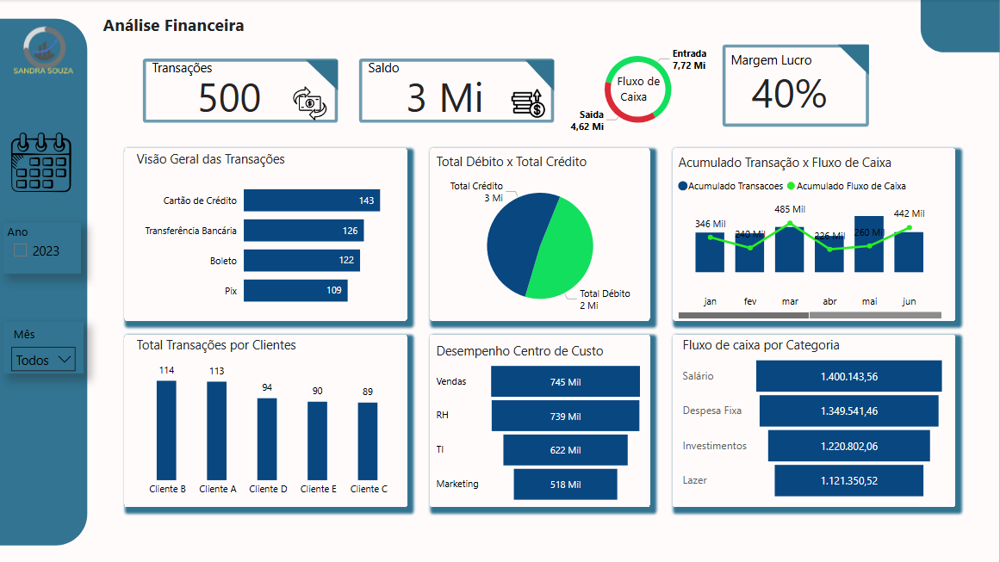

Portfólio Power BI - Dashboards
Projeto Financeiro I

Este dashboard apresenta uma visão financeira consolidada com análise de receitas, despesas e saldo final. Os principais indicadores fornecem uma visão clara da saúde financeira ao longo do tempo.
Projeto Logística I

Análise logística completa, com foco em custos, entregas, pedidos e principais influenciadores. Métricas visuais como árvore hierárquica e tooltips interativos auxiliam na identificação de gargalos e pontos fortes na cadeia logística.
Produção de Veículos I

Visualização dos dados de produção de veículos da montadora Iveco. O painel traz a produção mensal, comparação entre fábricas e análise de eficiência na montagem de veículos.
Dados Funcionários I

Este dashboard analisa dados de colaboradores, como quantidade por setor, salários, tempo de empresa e distribuição por faixa etária e gênero. Útil para decisões estratégicas de RH.
Análise Vendas I

Análise de vendas com dados por produto, região e canal de vendas. O dashboard permite identificar os itens mais vendidos e regiões com maior retorno financeiro.